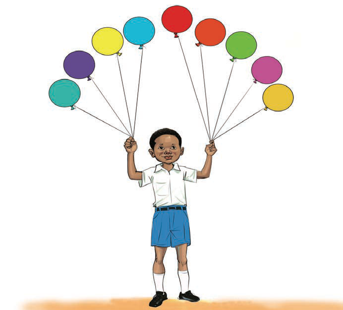

Shughuli ya pili
Angalia / Sikiliza mchoro ufuatao kisha jibu maswali yanayofuata.

100200300400500600700800900Maswali
1.Andika namba yenye fungu dogo la mamia kuliko zote.Swali la kwanza. Andika namba yenye fungu dogo la mamia kuliko zote.
2.Andika namba yenye fungu kubwa la mamia kuliko zote.Swali la pili. Andika namba yenye fungu kubwa la mamia kuliko zote.
3.Soma / Soma kwa lugha ya alama namba zilizopo kwenye picha kuanzia ndogo kwenda kubwa.Swali la tatu. Soma / Soma kwa lugha ya alama namba zilizopo kwenye picha kuanzia ndogo kwenda kubwa.
4.Soma / Soma kwa lugha ya alama namba zilizopo kwenye picha kuanzia kubwa kwenda ndogo.Swali la nne. Soma / Soma kwa lugha ya alama namba zilizopo kwenye picha kuanzia kubwa kwenda ndogo.
29